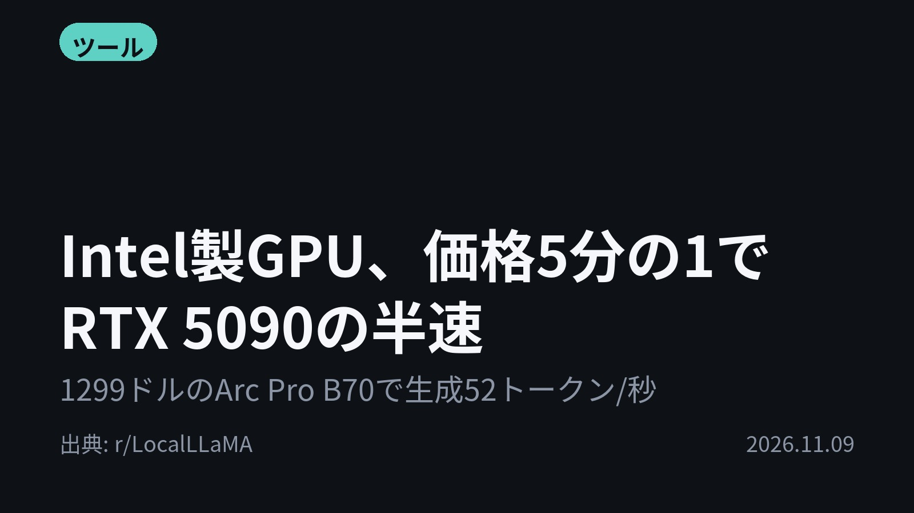
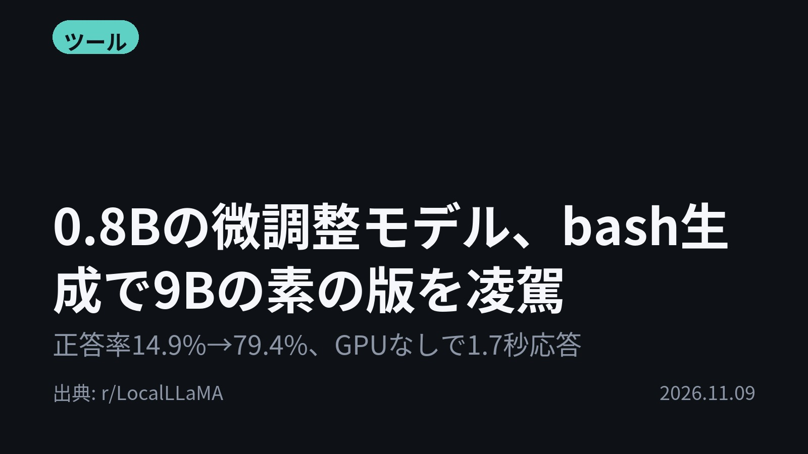

今日のAIニュース 下書き
2026-11-09 生成 11/09 08:41
⚠ ファクト照合で要確認の項目があります。
各ニュースの警告を確認してから投稿してください。
X（4投稿）
Intel製GPU、価格5分の1でRTX 5090の半速
原題: Intel Arc Pro B70 32GB ($1,299) vs NVIDIA RTX 5090 ($6,500+) on Qwen3.8-27B: about 1/2 speed gen (1/3 speed prefill) for 1/5 price, after best setup

1,299ドルのGPUで生成52トークン/秒。 Intel Arc Pro B70でQwen3.8-27Bを実測。 RTX 5090(98トークン/秒)の約半分を1/5の価格で。 5090側は他者の投稿の値。 #AI #ローカルLLM（出典: r/LocalLLaMA）
重み 185 / 280（見た目 131字）
要確認:
［固有名詞］トークン — この語が本文に見つかりません
［固有名詞］プロンプト — この語が本文に見つかりません
［固有名詞］LocalLLaMA — この語が本文に見つかりません
0.8Bの微調整モデル、bash生成で9Bの素の版を凌駕
原題: I fine-tuned Qwen3.5-0.8B to turn plain English into bash. What I learnt

bashの生成なら、0.8Bが9Bに勝った。 テスト471件で、0.8Bを微調整した「dale」は正答率79.4%。素のQwen3.5-9Bは62.8%。 GPUなしの2020年製ノートPCで応答1.7秒。 #AI #Qwen（出典: r/LocalLLaMA）
重み 183 / 280（見た目 128字）
要確認:
［固有名詞］コマンド — この語が本文に見つかりません
［固有名詞］オフライン — この語が本文に見つかりません
［固有名詞］ファイル — この語が本文に見つかりません
［固有名詞］サーバー — この語が本文に見つかりません
［固有名詞］LocalLLaMA — この語が本文に見つかりません
「この国に検閲はある？」各LLMの回答を世界地図に
原題: "Does censorship exist in [country]?", according to various LLMs
「この国に検閲はある？」をLLMに全ての国で聞いたら？ 同じYes/No質問を国ごとにモデルへ投げ、回答をSVGの世界地図に描く小さなプログラムを作者が公開。 作者自身「結果にはかなり驚いた」とコメント。 #AI #LLM（出典: r/LocalLLaMA）
重み 221 / 280（見た目 126字）
要確認:
［固有名詞］プログラム — この語が本文に見つかりません
［固有名詞］LocalLLaMA — この語が本文に見つかりません
無断で社外AIを使うエース社員、どう対処？
原題: 「勝手に社外AIを使う」エース社員に困っています……どうすべき？
会社に無断で、エース社員が社外のAIを使っている——。 「どうすべき？」という相談に記事が回答。 論点は全面禁止か、容認か。 会社が認めていないAIを社員が勝手に使う「シャドーAI」の悩みだ。 #AI #シャドーAI（出典: ITmedia AI+）
重み 218 / 280（見た目 121字）
要確認:
［固有名詞］シャドー — この語が本文に見つかりません
Instagram（カルーセル 6枚）


1,299ドルのGPUがRTX 5090の約半分の速さ。0.8Bの小型モデルが9Bを上回る。 今日は「小さく、安く」で勝負する話から。 1. Intel Arc Pro B70（32GB）は、買ったままの状態では「本当にひどかった」が、設定を変えてRTX 5090の約半分の速さに。メモリ1GBあたりの価格は約41ドルで、5090は200ドル超。 プロンプト処理は約960対2,830トークン/秒で約1/3。5090の数値は他者の投稿からの引用(r/LocalLLaMA) 2. 英語で頼むとbashコマンドを書くオフラインの端末ツール「dale」。実行前にコマンドをsafe／caution／dangerの3段階で判定し、ユーザーが確認するまで何も実行しない。 llama.cpp入りの51MBの単一ファイルで動き、Pythonもサーバーも不要(r/LocalLLaMA) 3. 全ての国について同じYes/No質問をLLMに投げ、回答をSVGの世界地図にするプログラム。今回の質問は「その国に検閲は存在するか」。 作者は結果に驚いたと書いているが、投稿本文に具体的な結果は書かれていない(r/LocalLLaMA) 4. 会社に無断で社外のAIを使うエース社員に、全面禁止で臨むか、容認するか。会社が認めていないAIを社員が使う「シャドーAI」をめぐる相談に答えた記事(ITmedia AI+) 今日の4本は、GPU選び・小型モデル・モデルの回答の比べ方・社内ルールと、AIを「どう使うか」の工夫が並びました。 毎朝4本、AIニュースを要点だけまとめています。明日の4本を見逃さないようフォローを。あとで読み返すなら保存がおすすめです。 #AI #生成AI #人工知能 #テクノロジー #ArtificialIntelligence #LLM #ローカルLLM #LocalLLM #AI活用 #機械学習 #MachineLearning #GPU #Intel #ArcPro #RTX5090 #Qwen #ファインチューニング #FineTuning #bash #シャドーAI #ShadowAI #AIガバナンス
919字（Instagram上限 2,200字）
この日の選定理由
Intel製GPU、価格5分の1でRTX 5090の半速
RTX 5090が6500ドル超まで値上がりする中、NVIDIA以外のGPUでも同じ32GBのメモリでローカルLLMを実用的に動かせることを示す。ただし5090側の数値は投稿者自身の計測ではなく、他の投稿からの引用。
0.8Bの微調整モデル、bash生成で9Bの素の版を凌駕
用途を絞って微調整すれば、11分の1のサイズのモデルでも汎用の大型モデルを上回れることを数字で示した。オフラインで安全に動く手元ツールの作り方として参考になる。
「この国に検閲はある？」各LLMの回答を世界地図に
国ごとのAIの「思い込み」を地図で一目で比べられ、モデルに偏りがあるかを考える手がかりになる。ただし本文には具体的な結果が書かれていない。
無断で社外AIを使うエース社員、どう対処？
会社が認めていないAIを社員が勝手に使う「シャドーAI」は、多くの企業が抱える課題になっている。全面禁止だけでは成果を上げている社員の意欲を損ねかねず、ルールの作り方が問われる。